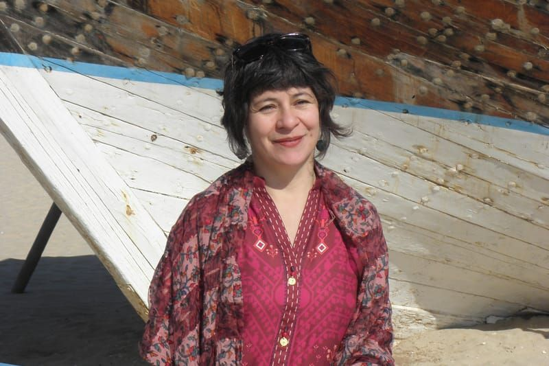

Invitada nacional
Sandra Camacho López
Artista escénica e investigadora docente vinculada a la Facultad de Artes de la Universidad de Antioquia. Realizó su estancia postdoctoral en el laboratorio LLA-CRÉATIS de la Universidad de Toulouse. Es Doctora y Magíster en Teatro y Artes del Espectáculo de la Universidad Sorbonne-Nouvelle (París 3) y Maestra en Artes Escénicas de la Facultad de Artes ASAB.
Sus intereses por las dramaturgias contemporáneas y la investigación-creación se han encaminado por temas como lo trágico, el desarraigo, la migración y la memoria. Fue investigadora del proyecto TransMigrARTS. Ha publicado libros como Poéticas del desarraigo y artículos en revistas como Calle 14 y Corpo-Grafías.